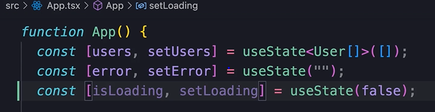
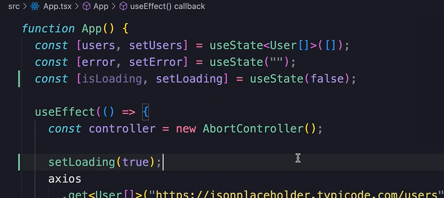
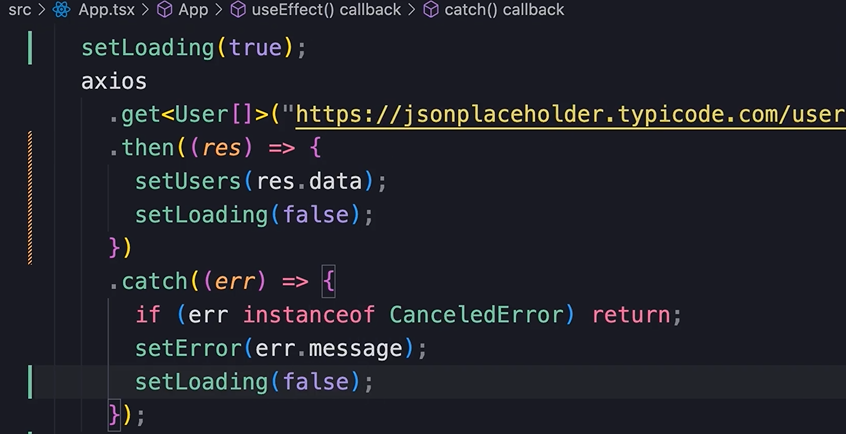
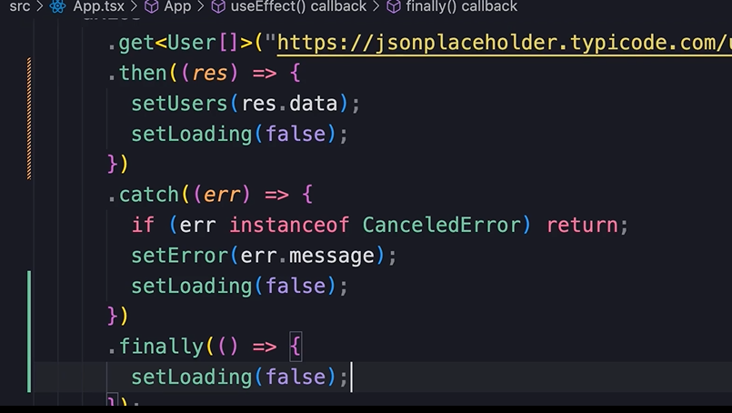
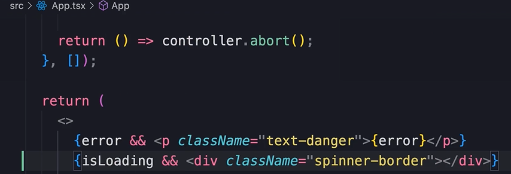

HOME
Showing a Loading Indicator
Topic im talking about
Let's see how we can show a loading indicator while we are fetching
data.
First, use a boolean state var to store an isLoading state.

Then, right befor we call to the server, we say isLoading...

To set isLoading to false we cannot call it after entire get method,
because if we did it would get immediately turned off due to the
nature of the async operation.
So instead we must call it like...

💡 The order of these functions doesn't matter because react applys
all the changes, then renders the component.
But now we have duplicated setLoading! Boo!
the .finally method
The proper way to do this is in the .finally() method.
💡 All promises have a finally method.
In the finally method we can pass a callback, and this will always get
executed when our promise is settled.
Whether it's resolved, or rejected!
With that we can write the code only once...

❗❗❗❗❗🤯💥💣🧨
HOWEVER
This does NOT WORK WITH STRICT MODE turned on.
🧨💣💥🤯❗❗❗❗❗
There is no explanation to be found for this anywhere.
So unfortunaltely for the developement stage, we have to duplicate
isLoading.
Rendering the loader
So we render a bootstrap loader if isLoading is true...

We probably won't see the loader because it loads so fast on
localhost, but we can throttle the connection in the network tab of
the dev tool, and then we will see it with each refresh.